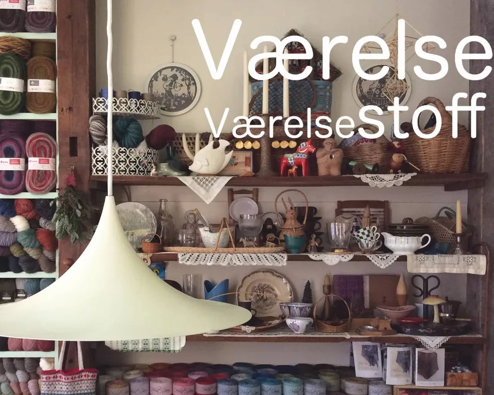
ヴェアルセ店內 Photo: Google 地圖
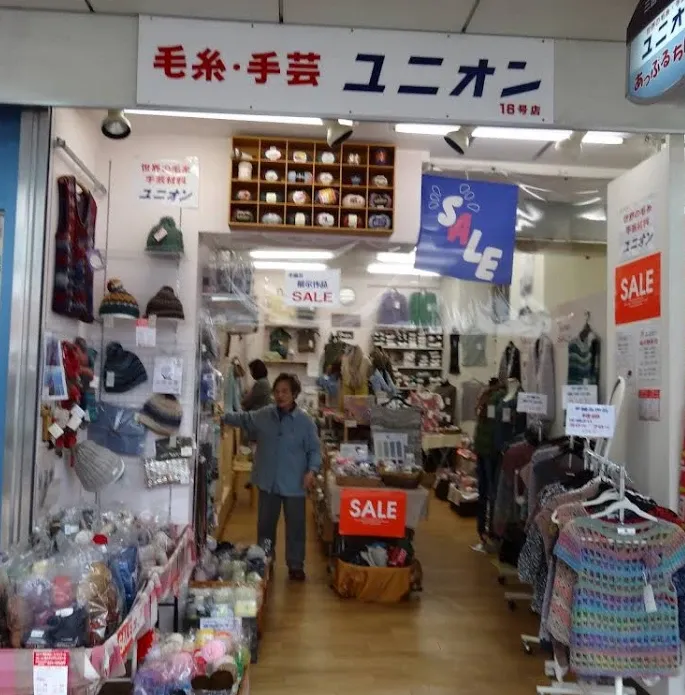
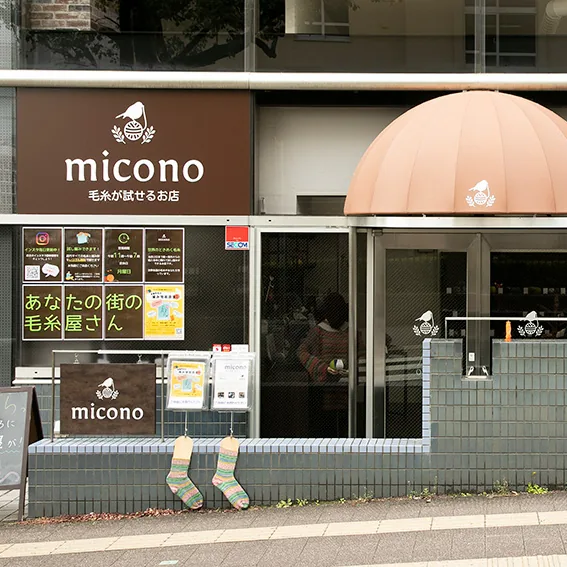
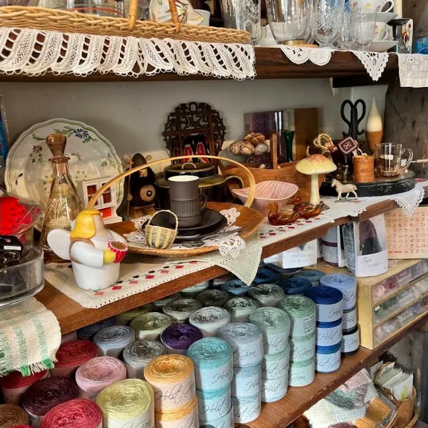
- 01ユニオンウール10:30
- 02Rollo Antiques12:00
- 03ヴェアルセ14:00
Take the hotel shuttle to Sannomiya in the morning. Start at the yarn shop by the station, follow the covered arcades west, and pick out vintage buttons before lunch in Nankinmachi. Nordic wool after.
早上搭飯店接駁車到三宮，
先逛車站旁的毛線老店，
再沿著拱廊往元町走，
挑幾顆古董鈕扣。
中午在南京町吃飯，
飯後去北歐毛線店。
店面 ユニオン 16 號店 Photo: Google 地圖
01 / 10:30
A long-established Kobe yarn shop stocking wool from around the world. Three minutes on foot from Sannomiya Station, and the first stop of the day.
神戶的老字號毛線行，
從世界各國挑來的毛線
和手藝材料都在這裡。
離三宮站走路約三分鐘，
是這天的第一站。
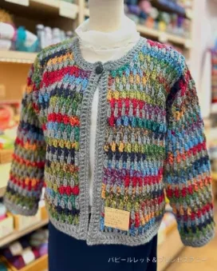
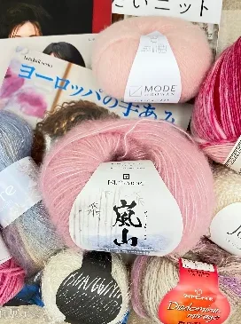
店內 Photo: IG @unionwool
- 抵達
- 10:30
- 營業
- 10:00–19:00
- 公休
- 週一
- 地址
- 北長狭通 1-30-16
- 交通
- 三宮站走約 3 分
- 電話
- 078-331-8854
ユニオンウール
老字號・世界毛線
Union Wool
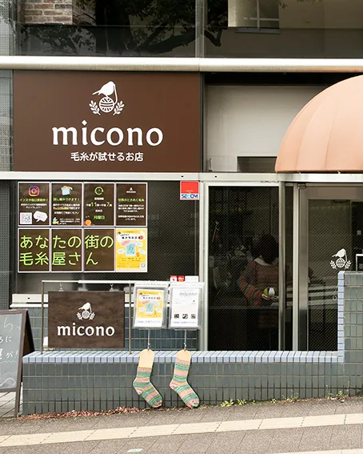
古董鈕扣 Photo: IG @rollokobe
02 / 12:00
Vintage buttons, beads and ribbons, gathered mostly from France and Belgium. Pick buttons for a finished cardigan, or parts for accessories. Opens at noon and closes on irregular days, so check Instagram first.
法國、比利時為主的
古董鈕扣、珠子和緞帶，
一顆一顆慢慢挑。
織好的開襟衫，
可以來這裡配鈕扣。
中午才開門，
不定休，先看 IG。
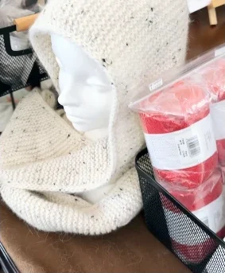
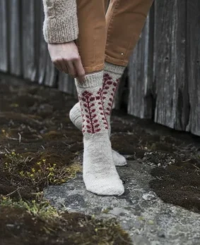
店內 Photo: Google 地圖
- 抵達
- 12:00
- 營業
- 12:00–18:00
- 公休
- 不定休，出發前看 IG
- 地址
- 北長狭通 3-11-9 野山ビル 1F
- 交通
- 元町站走約 4 分
- 電話
- 078-334-2505
Rollo Antiques
古董鈕扣・珠子
Rollo Antiques — vintage buttons
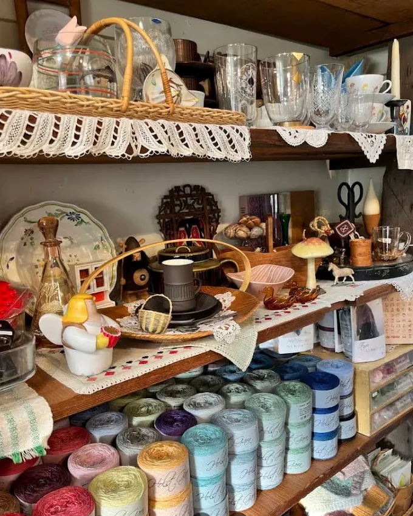
店內 Photo: Google 地圖
03 / 14:00
Yarn from Northern Europe and France, with the fullest range of Danish ISAGER in town. Knitting classes too. A short walk from Nankinmachi after lunch.
專賣北歐和法國的毛線，
丹麥 ISAGER 特別齊全，
也有開編織課。
就在南京町附近，
吃完午餐走過去剛好。
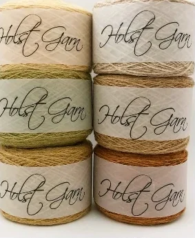
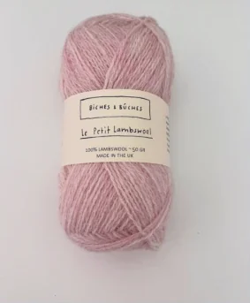
店內商品 Photo: IG @vaerelse_fyn
- 抵達
- 14:00
- 營業
- 11:00–18:00
- 公休
- 週二、週三
- 地址
- 栄町通 3-1-7 栄町ビルディング 3F
- 交通
- 南京町附近
ヴェアルセ
北歐毛線
Værelse
ROUTE / 10.11 SUN
- 10:00飯店免費接駁車出發，約 20 分到三宮
- 10:3001 ユニオンウール
- 11:00三宮中心街一路逛到元町商店街
- 12:0002 Rollo Antiques
- 13:00南京町午餐
- 14:0003 ヴェアルセ
- 15:00umie・馬賽克
- 17:25美利堅公園看日落
NOTES
- ユニオンウール和ヴェアルセ 10/11 都有開。
- Rollo 不定休，出發前先看 IG @rollokobe。
- ユニオンウール週一公休，ヴェアルセ週二、週三公休。
- 營業時間可能臨時調整，出發前看各店官網或 IG 再確認。
- 毛線很佔空間，行李箱記得留位置。
PHOTOS
照片取自 Google 地圖與各店 IG，版權屬原作者。
KNITKO
BE
KNIT TRIP VOL.01
KOBE · 2026.10